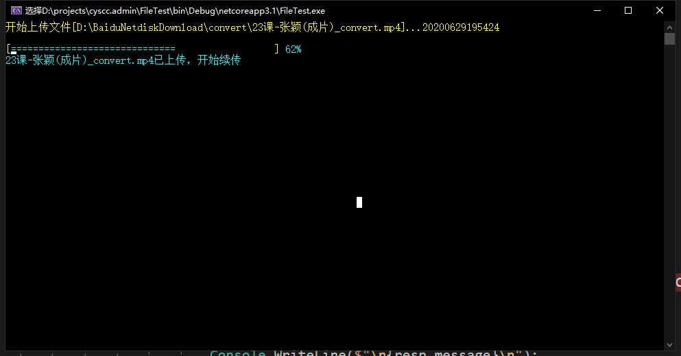
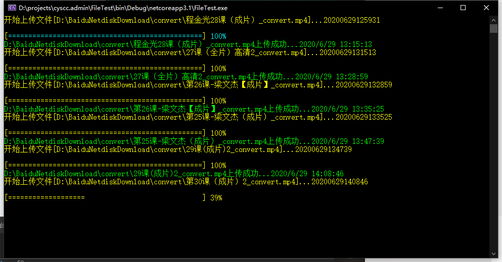

最近写了一个支持大文件分片上传的小工具，算不上好吧，但还是想拿出来简单分析一下。
当前几乎所有的cms系统都会有上传文件的需求，而要上传的文件除了文档，图片等小型文件外，偶尔也会遇到上传大的视频文件，压缩包等等，这时候就要用到分片上传的功能。
如果是内网环境下，我们可以考虑使用ftp来上传大文件，但大多数情况我们都是在外网环境下进行上传的，当然也可以配置ftp来上传，但少不了一番折腾，而且还会造成很大的安全隐患。
分片上传是走的http协议的，优点就是安全，方便，缺点就是速度慢，而且http上传大文件会有网络限制等问题，所以就需要进行分片上传。
当然了，分片上传的代码现在在网上一搜一箩筐，但其实原理都一样，对照代码来看一下
先来看接收端
1 | public async Task<ActionResult> UploadFile() |
第一段就是用来接收客户端上传的分片文件，第二段就是合并文件；
第一段里有一段根据文件名的md5值来判定文件是否已经上传过，就是当接受第一个分片文件时，根据该文件md5值来判定，如果有，则返回当前已经接收的文件最大索引值，从而实现断点续传的功能。
至此，支持分片上传的服务端代码就完成了，再来看看客户端
一般我们常使用浏览器来进行上传，类似的js代码网上也数不胜数，我就不贴我的js代码了，因为这个接口除了页面再用，还有一个上传工具也在用，而这个工具是个控制台程序，所以我这里分享下上传文件的C#代码。
在页面端，我们可以通过设定请求的特定参数，来方便的提交文件信息，而后台代码原理是一样的。
这里我们除了自己构造httprequest参数，也可以采用一个第三方的类库RestSharp，来方便的进行，为什么推荐RestSharp呢，因为有一次看postman的提交代码，发现postman生成的c#代码里就是用的RestSharp进行的
表单模拟，所以就尝试用了一下，还不错。
1 | public static async Task<bool> SliceUploadAsync(string filePath,string lesson_id ,Func<int,int> displayProgress=null) |
代码有些凌乱~简单说明一下
方法参数中的filePath就是文件的地址，第二个参数是业务参数，不解释，第三个时一个委托方法参数，为的输出上传进度，也不多说。
整段的代码逻辑就是，读取文件，每次读取1M字节流进行上传，同时传入上传的分段索引，md5值，总共的分段个数，文件名和其他业务参数。
其中，当上次第一个索引文件时，接收端会判断之前是否上传过该文件，如果上传过，则会返回指定的状态码，同时返回服务端的最大索引值，这样客户端就可以通过该索引值来继续进行上传。
也就是说，当我们在上传大文件的过程中，如果遇到断网，断电等情况时，也完全不用担心，下次恢复正常后，继续上传即可。
好了，至此，一个支持断点续传的大文件分片上传的小模块就完成了，看下效果图吧。

